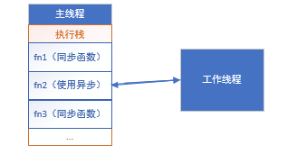
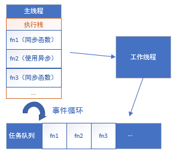
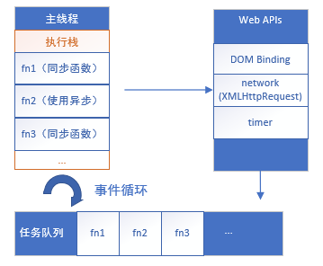
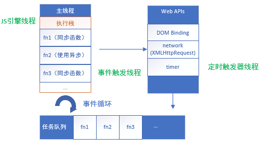

原文连接:https://www.cnblogs.com/dadaxindeyuanzi/p/11186068.html
 前言
前言
本文从JS是单线程开始，到JS为了提高效率，使用异步，到JS如何实现异步（做法是主线程外另开工作线程和任务队列，他们之间是如何工作的——事件循环），再到浏览器是如何配合JS执行异
步（其他浏览器线程）。最后提到了一个任务队列的优先级问题。
涉及的需要重点理解的概念有主线程、执行栈、异步、异步任务、任务队列、事件循环等。
一、JS是单线程。
所谓单线程，是指在JS引擎中负责解释和执行JavaScript代码的线程只有一个。不妨叫它主线程。
选择单线程的原因之一是JS要操作DOM，如果多线程可能造成执行混乱。经典栗子来了，有要删除节点的函数，有要操作节点的。万一多线程执行顺序乱了就坏了。
二、JS的异步
单线程使得JS引擎只能一个任务结束再执行下一个，如果某任务时间较长，就会发生阻塞。为了解决这个问题。JS也使用了异步编程。
🍉简单说下同步（synchronous）和异步（asynchronous）。
同步和异步通常是用来形容一个函数被调用时发生的行为。
同步函数被调用时，调用必须获得预期结果后，才能继续后续行为。比如，下面这个（毫无营养的）函数，
var synFunc = function(description){
var str = "you are";
str = str + description;
consoloe.log(str);
}
synFunc("great"); //立刻获得预期结果——在控制台输出字符串。而异步函数被调用时，异步函数的调用会很快完成，异步任务通常会被放到其他线程中执行。调用者就可以继续后续的操作，而不必等待这个任务执行完成，才运行。比如，下面这个ajax函数（使用jquery）
$.ajax({
url:"data.txt";
async:true; //默认为true,异步
success:function(data){
console.log(data;)
};
});运行此函数，读取文件中数据这个任务，会被放到其他线程中去执行。等有结果再在控制台输出data。在没获得结果前，后面函数也可以执行。
🍉 JS的异步实现机制呢，就是我们在主线程（强调，在JS引擎中负责解释和执行JavaScript代码的唯一线程）外，新开一个线程用来执行那些异步任务，我们暂且称为工作线程。
具体运行机制可以理解为，当主线程的异步函数在被调用的时候，会请求工作线程的帮助。工作线程接收这个任务并执行。主线程可以继续运行后面的函数，而不必阻塞在这。


🍉 由于回调函数在JS异步中是个非常重要的概念，我们先说一下。
异步函数通常具有以下的形式，
var asynFunc = function(args
asyncFunc可以叫做异步过程的发起函数，或者叫做异步任务注册函数。args是这个函数需要的参数。callbackFn是回调函数。回调函数是必须的。举个具体的例子：
setTimeout(fn, 1000);其中的
setTimeout就是异步过程的发起函数，fn是回调函数。注意：前面说的形式
A(args..., callbackFn)只是一种抽象的表示，并不代表回调函数一定要作为发起函数的参数，例如：var xhr = new XMLHttpRequest();
xhr.onreadystatechange = xxx; // 添加回调函数
xhr.open('GET', url);
xhr.send(); // 发起函数发起函数和回调函数就是分离的。
[文章1]
再比如，事件绑定函数其实也是异步函数。
document.getElementById("btn").addEventLister('click',fucntion(){
//...
});该注册函数就是异步过程的发起函数，为click绑定的函数相当于回调函数。
三、任务队列(task queue)和事件循环(event loop)
接下来我们对JS的异步运行机制加以扩充。异步任务具体是怎么执行的，主线程和工作线程是怎么通信合作的。先上图。


我们先解释两个概念，同步任务和异步任务。前面我们提到过的同步函数就是同步任务。异步任务就是异步任务注册函数触发的的不在主线程上执行的任务。
主线程中，同步任务组成一个执行栈（execution context stack）。
工作线程执行的异步任务组成一个任务队列（task queue），也叫事件队列或消息队列。只要异步任务有了结果，就将此异步任务的结果（包含回调函数的对象）推入任务队列中。
主线程完成执行栈中的同步任务后，就会读取任务队列，放入主线程中执行。
主线程不断重复运行执行栈中同步任务，读取任务队列，运行异步任务的过程，这就叫事件循环（event loop)。
只要主线程空了，就会去读取"任务队列"，这就是JavaScript的运行机制。[文章3]
我们把上面提到的一个有营养的栗子再拉出来遛遛。
$.ajax({
url:"data.txt";
async:true; //默认为true,异步
success:function(data){
console.log(data);
}; //请求成功状态下的回调函数
});主线程在发起ajax请求后，会继续执行其他代码。ajax线程负责读取文档，拿到响应结果后，把响应封装成一个JS对象，存放在任务队列中。
var task = function(data){
console.log(data); //执行回调函数
}
主线程执行完所有同步任务后，来读取任务列表，取出此任务放入主线程并执行，即执行回调函数。
四、异步操作的执行
前面我们只是简单提到主线程外，有工作线程用来执行异步操作。主线程我们知道，就是JS引擎负责解释执行JS代码的唯一线程，也叫JS引擎线程。那工作线程具体指什么，是什么执行了那些异步操作呢。
事实上，这些异步操作是由浏览器内核的webcore来执行的，webcore包含三种webAPI ,分别是DOM Binding、network、timer模块。
DOM Binding 模块处理一些DOM绑定事件，如onclick事件触发时，回调函数会立即被webcore添加到任务队列中。
network 模块处理Ajax请求，在网络请求返回时，才会将对应的回调函数添加到任务队列中。
timer 模块会对
setTimeout等计时器进行延时处理，当时间到达的时候，才会将回调函数添加到任务队列中。[文章5]
所以，我们把JS运行机制的图改为，


五、浏览器的多线程
既然前面有提到负责JS解释的线程有且只有一个，我们叫他主线程，也叫JS引擎线程。也提到处理异步操作的工作是由webAPI负责，那么剩下的工作过谁做呢，二者之间的通信是由什么执行。接下来我们将继续扩充。
事实是，虽然JS是单线程的，但浏览器本身是多线程的。
JS运行主要涉及的浏览器线程有：
-
JS引擎线程。主线程。负责解析Javascript脚本，运行代码。一直等待着任务队列中任务的到来，然后加以处理，一个Tab页（renderer进程）中无论什么时候都只有一个JS线程在运行JS程序。
-
定时触发器线程。处理定时器函数setTimeout和setInterval的线程。通过它来计时，在计时完毕后，将任务添加到任务队列。
-
事件触发线程。这个线程和其他线程不太一样。是负责线程间的沟通和事件循环的。当JS引擎执行代码块如setTimeout时（或者鼠标点击、ajax请求等），会将任务交给工作线程；当工作线程执行完毕，将结果添加到任务队列。
-
异步http请求线程。在XMLHttpRequest在连接后是通过浏览器新开一个线程请求。将检测到状态变更时，如果设置有回调函数，异步线程就产生状态变更事件，将这个回调再放入任务队列中。再由JavaScript引擎执行。
当然还有GUI渲染线程等，这里先不讲。继续补充上图。

六、定时器函数
只说一下setTimeout。前面提到过的栗子。
setTimeout(fn, 1000);值得注意的就是，第二个参数1000ms，是指执行完这个函数，到将fn推入任务队列这个动作的时间。并不是执行完这个函数到执行fn之间的时间。因为fn推入任务队列并不一定会被立刻执行。前面提到过，必须要等到执行栈中的同步任务和已在任务队列中的异步回调函数执行完，才会执行。
但是我们一直还有一个问题没有说，我们知道主线程中的同步任务一定是按顺序执行的，那所有的任务队列中的任务也是么。
先看一个题目。
//执行下面这段代码，执行后，在 5s 内点击一下，输出结果是什么？
setTimeout(function(){
console.log('timer');
}, 0)
function waitFiveSeconds(){
var now = (new Date()).getTime();
while(((new Date()).getTime() - now) < 5000){}
console.log('finished waiting');
}
document.addEventListener('click', function(){
console.log('click');
})
console.log('click begin');
waitFiveSeconds();输出结果是
click begin
finished waiting
click
timer前面的我们就不介绍了，只说按理说，setTimeout()函数首先执行，而且延时时间为0，会立刻被推入任务队列中，接下来才是点击事件的发生和推入。但结果却是先执行了click函数。这就说明，不同类型的任务是有优先级的。
ES5的规范有对这方面的解释，总结就是：
一个事件循环可以有多个任务队列，队列之间可有不同的优先级，同一队列中的任务按先进先出的顺序执行，但是不保证多个任务队列中的任务优先级，具体实现可能会交叉执行。
具体任务队列是如何划分的，详情可见文章5，不过对我们的理解没什么影响。
相同任务源的任务，只能放到一个任务队列中。
不同任务源的任务，可以放到不同任务队列中。
此外我们还可以非常肯定的就是宏任务会先于微任务。不过这里就不展开了。
总结
浏览器中，解释和运行JavaScrip代码的线程只有一个，我们称其为主线程。单线程有它的必要性，可以避免操作DOM的时候产生混乱，但也有明显的缺点，很容易造成阻塞。所以JS同样使用了异步编程。具体操作是，把要执行的任务分为两类，同步任务和异步任务。同步任务一般是那些可以立刻拿到结果的任务，这类任务直接放在主线程中执行，形成执行栈。常见的异步任务有事件绑定函数、ajax请求、定时器浏览器和具有回调函数的函数等，这类任务浏览器会另开线程执行，执行完的任务结果，一般是指返回回调函数的一个对象，它们会被放在任务队列中。当主线程执行完执行栈中的同步任务，就会来任务队列中取异步任务结果，并执行它们。这个过程会一直反复，我们叫它事件循环。整个JS的运行机制大概就是这样。
本文是小白学习JS运行机制中捋出来的思路，有点层层递进的感觉，难免有理解错误或表述不当的地方，请指正，谢谢。另外，如果能帮助到看到这篇的你，我很感激。